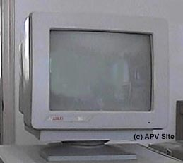

In 1985, Atari Corp. announced the new Atari XE line of computers and in one of their first ads with the slogan "A New Angle on Computing" showing the back edge of the Atari XE computer system with its 45 degree slanted vents Atari displayed its 130XE computer, its new disk drive (actually a 1050 disk drive and controller inside a grey XE styled casing) a new 80 column thermal printer, a new 80 column dot matrix printer, a new 300 baud modem and... a first for Atari computers, an actual monitor made by Atari for an Atari 8-bit system. This was actually one of 2 monitors promised, it was called the Atari XC1411 color monitor and it was a basic composite monitor with very good screen quality. The monitors were never sold and most are marked "SAMPLE" on the back of them where the model and serial number information would be.
The second promised
monitor was called the XM128 monitor and it was promsed to be a 12" monocrome
monitor with built in 80 column display card. This monitor
never made it past naming it. However Atari did release an
80 column "kludge" card. The interface ran from the 2nd
joystick port. Most users had hoped that Atari would make it
for the under-used PBI/ECI slot.